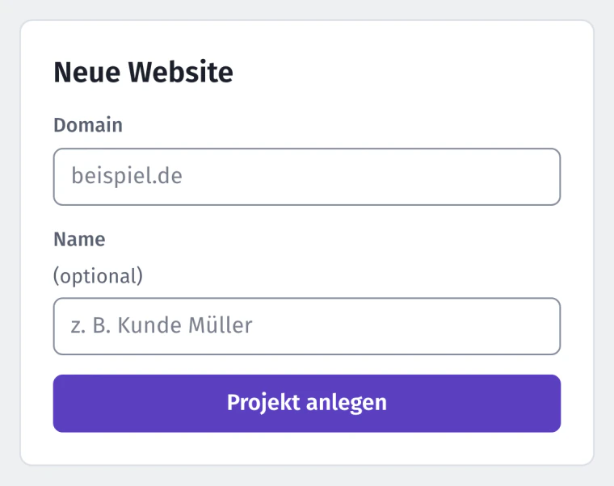

Website-Check
111 Prüfungen zu Technik und Inhalt, eine Zahl für den Zustand und die Liste „Was jetzt tun“.
Dazu die Ladezeit auf einem simulierten Handy, gemessen auf deinem Rechner.
Nextfix ist ein kostenloser SEO-Check, der lokal auf deinem Rechner läuft. Er prüft deine Website und macht daraus eine kurze Liste: was zuerst dran ist, warum und wie.
Kostenlos installierenDemo ansehen
Was jetzt tun
Entferne fehlerhafte Adressen aus der Sitemap
Die Sitemap ist die Liste, mit der du Google deine Seiten meldest.
Dringendeinmal einstellenfür deine Technik
AnsehenWirkung mittel
Behebe 1 Seite mit „nicht gefunden“ (404)
Wirkung mittel
Die Adresse führt ins Leere („Seite nicht gefunden“).
Dringendkurz je Seitemachst du selbst



Eine Zahl von 0 bis 100, dazu Teilnoten für Technik, Inhalt, KI-Suche und Ladezeit.
Website-Zustand
6491von 100
Noch 16 Punkte bis „gut“.Gut gepflegt. Letzte Prüfung: 64 (▲ 26,6)
Was jetzt tun
8 Aufgaben3 Aufgaben
Entferne fehlerhafte Adressen aus der Sitemap
Wirkung mittel
Die Sitemap ist die Liste, mit der du Google deine Seiten meldest.
Dringendeinmal einstellenfür deine Technik
Behebe 1 Seite mit „nicht gefunden“ (404)
Wirkung mittel
Repariere defekte interne Links auf 1 Seite
Wirkung mittel
Bau 7 Seiten mit wenig Text aus oder nimm sie aus dem Index
Wirkung mittel
Gib 4 Seiten eigene Beschreibungen
Wirkung gering
Ergänze Bildbeschreibungen (alt) auf 3 Seiten
Wirkung gering
Der Alternativtext beschreibt ein Bild in Worten: Screenreader lesen ihn blinden Menschen vor, und Google versteht damit, was das Bild zeigt.
Wichtigkurz je Seitemachst du selbst
Kürze den Seitentitel von 2 Seiten auf 70 Zeichen
Wirkung gering
Schreib eine Beschreibung für 1 Seite
Wirkung gering
Seit der letzten Prüfung erledigt: Falsche Seiten in sitemap.xml, Seiten mit 4xx-Statuscode, Defekte interne Links, Wenig Text (< 200 Wörter im Hauptinhalt), Doppelte Meta-Descriptions
Die Demo „Radhaus Elbe“ hat 17 Seiten. 16 Prüfungen schlagen an, zusammen 55 Fundstellen. Der Website-Zustand liegt bei 64 von 100.
Nach Wirkung sortiert: Die wichtigste steht oben, mit dem Grund dazu. Große SEO-Tools zeigen dir das Rauschen, Nextfix zeigt dir den Anfang.
Nach fünf erledigten Aufgaben bleiben drei mit geringer Wirkung. Gemessen am 28.10.2026 mit Version 0.2.3, beide Fassungen lokal. So haben wir gemessen
Mit den Lücken von Nextfix und mit den anderen freien Werkzeugen. Preise und Angaben laut Anbieter-Websites und GitHub, Stand Oktober 2026.
| Merkmal | Nextfix | OpenSEO Open Source, Guthaben | SEO-Suiten Semrush, Ahrefs, Sistrix | Desktop-Crawler Screaming Frog | Freie Audit-Tools SEOnaut, Unlighthouse |
|---|---|---|---|---|---|
| Kosten | 0 € | gehostet ab 10 $/Monat plus Verbrauch; selbst gehostet zahlst du DataForSEO pro Abfrage | ab ca. 119–134 €/Monat | kostenlos bis 500 URLs, sonst 199 £/Jahr | 0 €, selbst gehostet; SEOnaut gibt es auch gehostet |
| Open Source | ja (MIT) | ja (MIT) | nein | nein | ja (MIT) |
| Bezahlte Datenquelle nötig | nein, nur deine Website, Search Console und Bing | ja, DataForSEO | im Preis enthalten | nein | nein |
| Konto nötig | nein | gehostet ja; selbst gehostet ein DataForSEO-Konto | ja | nein | nein, selbst gehostet |
| Deine Daten liegen | auf deinem Rechner | gehostet beim Anbieter, selbst gehostet bei dir | beim Anbieter | auf deinem Rechner | bei dir, selbst gehostet |
| Aufgaben nach Wirkung sortiert | ja, mit „wer macht es“ | teilweise | teilweise | teilweise, Funde mit Priorität hoch, mittel, gering | teilweise: SEOnaut nach Schweregrad, Unlighthouse nach Lighthouse-Wert |
| Eigene Google-Positionen | ja, aus Search Console und Bing | ja | ja | teilweise, Search-Console-Daten je Seite | nein |
| Positionen der Konkurrenz | nein | ja | ja | nein | nein |
| Einzelne Backlinks | nein, nur Domain-Stärke | ja | ja | nein | nein |
| Für Claude (MCP) | ja, 51 Werkzeuge, lokal | ja | je nach Anbieter | nein | kein MCP-Server; für Unlighthouse gibt es einen Skill für KI-Agenten |
| Installation | eine Zeile im Terminal, braucht Python 3.12 und git | keine (gehostet) oder Docker/Cloudflare | keine, im Browser | Programm installieren | SEOnaut: Docker mit MySQL; Unlighthouse: ein Befehl mit Node.js |
Ausführlich: Wofür Nextfix als Alternative reicht und wofür nicht. Quellen: SEOnaut, Unlighthouse, OpenSEO (Quellcode und Selbst-Hosting), Semrush, Ahrefs, Sistrix (zzgl. MwSt.), Screaming Frog. Abgerufen am 17.10.2026, ohne Gewähr. Kostenlose Testphasen und Gratis-Stufen der Anbieter gibt es mit Einschränkungen.
111 Prüfungen zu Technik und Inhalt, eine Zahl für den Zustand und die Liste „Was jetzt tun“.
Dazu die Ladezeit auf einem simulierten Handy, gemessen auf deinem Rechner.
Plätze und Klicks aus der Search Console und von Bing, sobald du sie einrichtest.
Die Zahlen im Bild sind Testdaten der Demo-Website.
Ideen, wonach deine Kunden suchen, aus den Vorschlägen beim Tippen.
Dazu deine eigenen Daten aus der Search Console.
Ob ChatGPT, Claude und Co. deine Seite lesen und verstehen können.
Berichte als PDF und CSV und ein Vergleich deiner Domain mit der Konkurrenz.
Claude prüft, erklärt Aufgaben, erstellt Berichte und holt Positionen, lokal und ohne Kosten pro Abfrage.
{
"mcpServers": {
"seo-tool": {
"command": "/pfad/zu/nextfix/.venv/bin/python",
"args": ["-m", "app.mcp_server"],
"env": { "PYTHONPATH": "/pfad/zu/nextfix" }
}
}
}radhaus-elbe.dehttps://radhaus-elbe.de
Fahrradreparatur und Inspektion in Hamburg | Radhaus Elbe
Reparatur, Inspektion und E-Bike-Service in Hamburg-Altona. Termin online oder einfach vorbeikommen.
Vereinfachte Vorschau: Google kürzt nach Breite, nicht nach Zeichen, und wählt manchmal eigenen Text. In WordPress findest du beides beim Bearbeiten der Seite im Kasten von Yoast SEO oder Rank Math („SEO-Titel“, „Meta-Beschreibung“).
Zwei der 20 Regeln aus „Seite optimieren“ plus Vorschlag, hier in deinem Browser gerechnet. Was du eintippst, verlässt deinen Rechner nicht. Beispiele erfunden.
Ja. Nextfix nutzt nur kostenlose Quellen: deine Website, die Search Console, Bing und Open PageRank. Es gibt keinen Server, keine bezahlten Schnittstellen und nichts, wofür jemand zahlen müsste.
Der Quellcode ist offen (MIT-Lizenz). Jede und jeder kann nachsehen, was das Programm tut, und es verbessern.
Nein. Zum Installieren fügst du eine Zeile ins Terminal ein, oder dein Webbetreuer macht das (einmal, ein paar Minuten). Danach startest du Nextfix auf dem Mac und unter Windows per Doppelklick, unter Linux mit einem Befehl, und bedienst es im Browser. Die Anleitung erklärt jeden Schritt.
Nextfix wird auf dem Mac entwickelt. Unter Mac und Linux laufen alle 284 automatischen Tests durch. Unter Windows funktionieren Installation, Start per Doppelklick und Prüfen; das wird bei jeder Änderung automatisch geprüft. Offiziell unterstützt ist Windows trotzdem noch nicht, weil dort einzelne Tests gelegentlich scheitern. Wenn du es ausprobierst, freut sich das Projekt über eine Rückmeldung auf GitHub.
Deine Ergebnisse bleiben auf deinem Rechner, in einer einzigen Datei, ebenso Verlauf, Aufgaben und Zugangsdaten. Nach außen geht nur, was für eine Abfrage nötig ist: Nextfix ruft deine Website ab, holt Vorschläge bei Google und, wenn du es einrichtest, Daten von Search Console, Bing und Open PageRank. Es gibt kein Konto bei Nextfix, kein Tracking, keine Telemetrie, keine Werbung und keinen Server, auf dem deine Daten liegen.
Es zeigt keine Positionen deiner Konkurrenz und keine einzelnen Backlinks, dafür bräuchte es bezahlte Datenbanken. Die Ladezeit misst es im Labor auf deinem Rechner, nicht bei echten Besuchern.
Nein. Nextfix sagt dir, was zu tun ist und ob du es selbst im CMS erledigen kannst oder dein Webbetreuer ran muss. Die Arbeit selbst bleibt bei euch. Dafür weißt du genau, was du beauftragst.
Dann schick Nextfix deinem Webbetreuer. Der Text ist fertig, du musst nur noch auf Senden drücken.
So sieht ein Bericht aus: Beispielbericht der Demo-Website (PDF, 8 Seiten, 118 KB)
Ohne Datum: Nextfix ist ein Nebenprojekt, und die Reihenfolge richtet sich nach echten Rückmeldungen.
Geplant: Klartext für alle Prüfungen, nicht nur für die zehn häufigsten Aufgaben. Windows offiziell. Verweisende Domains aus offenen Daten (Common Crawl), wenn das ohne Kosten geht.
Schon da seit 0.2.0: Installation aus der neuesten Version, Anleitungen in Klartext, Start per Doppelklick auf Windows.
Bewusst nicht geplant: Rankings fremder Websites (nur per Google-Scraping oder aus bezahlten Datenbanken), eine eigene Backlink-Datenbank, eine Cloud-Version, Tracking oder Telemetrie.
Mitmachen: Jede Prüfung ist eine kleine Python-Funktion mit @check. Fehler und Wünsche gehen als Issue auf GitHub, Beiträge nach der Anleitung für Mitwirkende (Englisch).